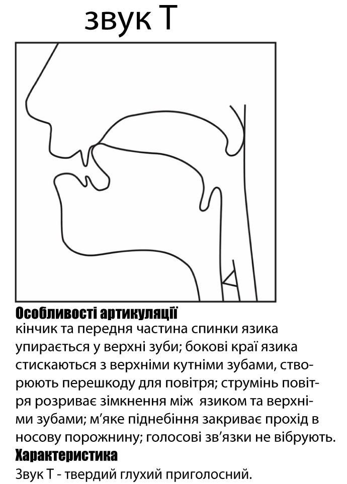
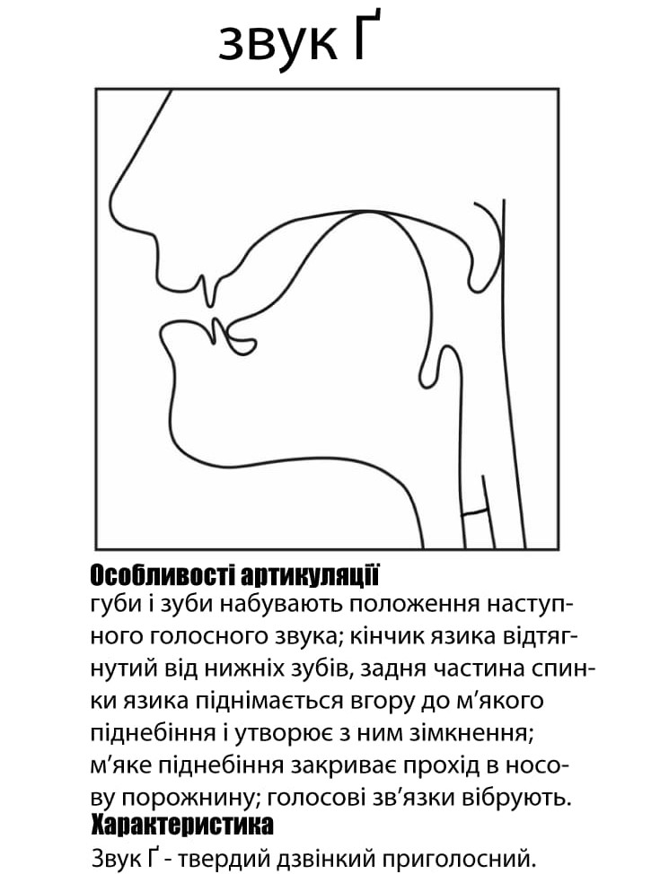

Класифікація приголосних
-
[д’] - дзвінкий, передньоязиковий, зубно-альвеолярний, зімкнено-проривний, м’який. Має дві артикуляції: 1)апікально-альвеолярну, коли кінчик язика підіймається вгору і разом із передньою спинкою утворює зімкнення за зубами на альвеолах, середня спинка язика підіймається вгору, намагаючись зайняти положення, характерне для [і]; 2)дорсально-альвеолярну, яка характеризується тим, що кінчик язика лежить біля нижніх зубів, а передня частина язикової спинки утворює зімкнення з альвеолами.(на малюнку). Зімкнення раптово розривається сильним повітряним струменем, завдяки чому виникає характерний шум. Голосові зв'язки під час артикуляції працюють.
-

[т’] -глухий, передньоязиковий, зубно-альвеолярний, зімкнено-проривний, м’який. Має дві артикуляції: 1)апікально-альвеолярну, коли кінчик язика підіймається вгору і разом із передньою спинкою утворює зімкнення за зубами на альвеолах, середня спинка язика підіймається вгору, намагаючись зайняти положення, характерне для [і]; 2)дорсально-альвеолярну, яка характеризується тим, що кінчик язика лежить біля нижніх зубів, а передня частина язикової спинки утворює зімкнення з альвеолами.(на малюнку). Зімкнення раптово розривається повітряним струменем, виникає характерний шум. Голосові зв'язки під час артикуляції не працюють.
-

[ґ] - дзвінкий, задньоязиковий, зімкнено-проривний, твердий. Кінчик язика тримається за нижніми зубами. Задня спинка язика підіймається до м'якого піднебіння і на рівні останніх кутніх зубів утворює з ним зімкнення. Унаслідок раптового прориву цього зімкнення струменем повітря утворюється специфічний для цих приголосних шум. М’яке піднебіння закриває прохід в носову порожнину. Вимовляється з участю голосу.
-
[с’] - глухий, передньоязиковий, зубний, щільний, серединний, м’який. Передня частина спинки язика зближується з твердим піднебінням, при цьому посередині язика утворюється вузька щілина у формі жолобка. Краї язика притискуються до бокових зубів і до частини твердого піднебіння. Широкий кінчик язика впирається в основу нижніх зубів. Повітряний струмінь протискується крізь щілину, вдаряється об верхні різці, внаслідок цього утворюється різкий шум, що нагадує свист. За цією акустичною ознакою називається свистячим. Твориться без участі голосу.
-
[з’] - дзвінкий, передньоязиковий, зубний, щільний, серединний, м’який. Передня частина спинки язика зближується з твердим піднебінням, при цьому посередині язика утворюється вузька щілина у формі жолобка. Краї язика притискуються до бокових зубів і до частини твердого піднебіння. Широкий кінчик язика впирається в основу нижніх зубів. Повітряний струмінь протискується крізь щілину, вдаряється об верхні різці, внаслідок цього утворюється різкий шум, що нагадує свист. За цією акустичною ознакою називається свистячим. Твориться з участю голосу.
-
[дз] - дзвінкий, передньоязиковий, зубний, африкат, твердий. При вимові першого компонента утворюється зімкнення передньої частини спинки язика з альвеолами, яке не закінчується вибухом, а плавно, без паузи переходить у щілинний елемент. Повітряний струмінь протискується крізь щілину, вдаряється об верхні різці, внаслідок цього утворюється різкий шум. Твориться з участю голосу.
-
[дз’] - дзвінкий, передньоязиковий, зубний, африкат, м’який. При вимові першого компонента утворюється зімкнення передньої частини спинки язика з альвеолами, яке не закінчується вибухом, а плавно, без паузи переходить у щілинний елемент. Додаткове підняття середньої спинки язика до твердого піднебіння. Повітряний струмінь протискується крізь щілину, вдаряється об верхні різці, внаслідок цього утворюється різкий шум. Твориться з участю голосу.
-
[ц’] - глухий, передньоязиковий, зубний, африкат, м’який. При вимові першого компонента утворюється зімкнення передньої частини спинки язика з альвеолами, яке не закінчується вибухом, а плавно, без паузи переходить у щілинний елемент. Додаткове підняття середньої спинки язика до твердого піднебіння. Повітряний струмінь протискується крізь щілину, вдаряється об верхні різці, внаслідок цього утворюється різкий шум. Твориться без участі голосу.
-
[дж] - дзвінкий, передньоязиковий, альвеолярний, африкат, твердий. Широкий кінчик язика спочатку змикається з переднім краєм твердого піднебіння, а потім це зімкнення поступово переходить у коротку щілину. Одночасно до переднього краю м'якого піднебіння наближається задня частина спинки язика. Проходячи крізь дві щілини, повітряний струмінь утворює характерний шум. За цією акустичною ознакою називається шиплячим. Твориться з участю голосу.